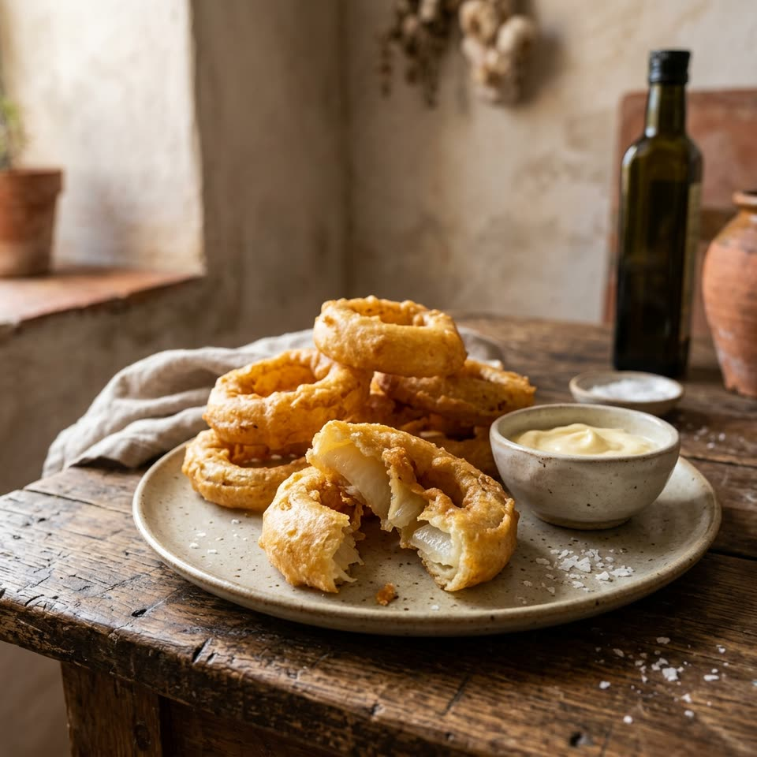

Цибуляні кільця в клярі
Кільця цибулі в клярі на дуже холодному пиві та борошні для темпури: зовні хрустять, всередині лишаються м’якими.

Алергени
Містить
- Глютен
Може містити (залежить від марки)
- Яйця
- Соя
- Сульфіти
Борошно для темпури може містити яйце й сою, а в пиві трапляються сульфіти — перевірте етикетки. Містять глютен (пшеничне борошно та пиво).
Інгредієнти
Кляр
Для смаження
Приготування
Збийте вінчиком усі інгредієнти для кляру до консистенції тіста для млинців.
Розігрійте олію приблизно до 200 °C.
Обваляйте кільця в борошні.
Занурюйте їх у кляр по одному, щоб повністю вкрилися.
Обережно опускайте в гарячу олію.
Коли кільця стануть темно-золотистими, викладіть їх на паперовий рушник і злегка посоліть.
До столу. Чудово поєднуються з гірчичним айолі.